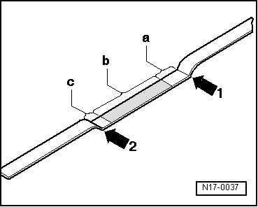

Engine Oil Dip Stick - Dip Stick Tube: Description and Operation
Oil Dipstick Markings

1 Max. mark
2 Min. mark
a Area above hatched field up to max. mark: Do not replenish with engine oil!
b Oil level within hatched field: Can be replenished with engine oil
c Area from min. mark up to hatched field: Replenish with max. 0.5 liter. of engine oil!